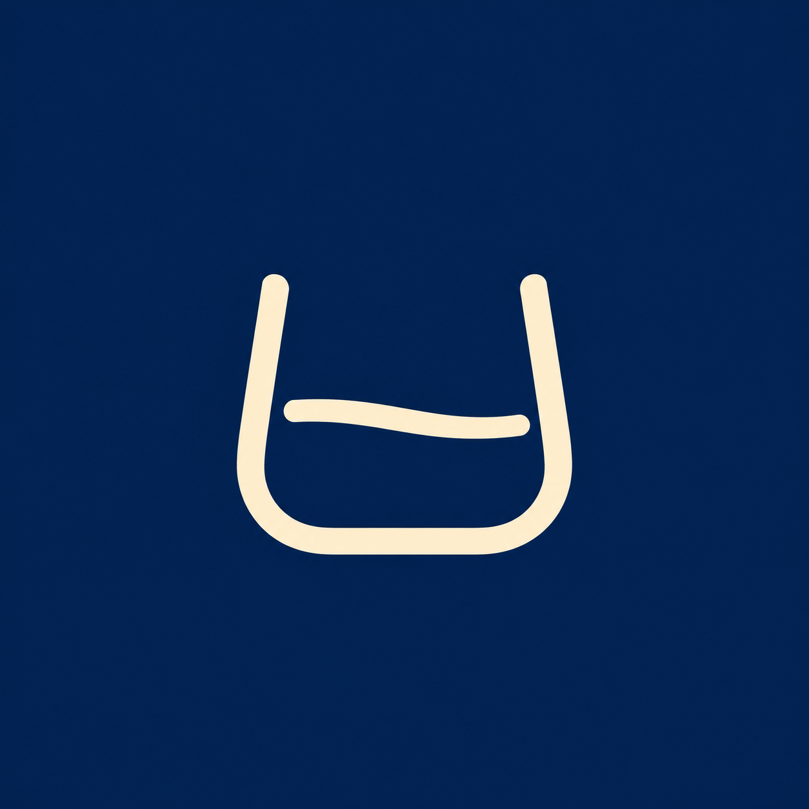

검수보고서 · 2026.10.15 · ANDROID 1.0.3
위스키다모아 작업·검수보고서
최신 작업 현황 · 17:26 KST
| 작업 | 상태 |
|---|
| 기존 링크 38개 순회 | 가격·확인 시각 16건 갱신 (금액 변경 5 / 동일 11) |
| 신규 DB 등록 | 상품 3개 + 상세 링크 3개. 가격·브랜드·분류·이미지 미입력 |
| 전체 목록 수집 | 이마트 30개 / 링크 29개. 17:22 화면 인식 오류로 중단. 트레이더스 미시작 |
| 로고·APK | 웹 배포·APK 1.0.3 릴리즈 완료. 실기기 설치 미검증 |
초기 표본 43개와 이번 30개는 중복이 있어 합산하지 않습니다. 전체 수집 완료율은 아직 알 수 없습니다.
DB 데이터 깨짐·정합성 검수
425행 검사: 상품 115 · 가격 157 · 링크 153
한글 깨짐 징후 0건 · 이번 반영 영수증 불일치 0건
이름 누락, 비정상 가격, 고아 참조, URL 구문 오류, 중복 가격도 발견되지 않았습니다. URL 목적지 전체와 모든 표기의 의미까지 보증하는 검사는 아닙니다.
기존 문제: 벤치마크 용량 불일치 1건 · 동일 링크 중복 1쌍 · 블론드에서 블랙 루비로 연결되는 링크 2건.
신규 3개는 이름·용량·상세 링크가 등록 계획과 일치하지만 가격·메타데이터는 아직 보강 전입니다.
DB 검수 결과 JSON · 전체 작업 정리와 남은 작업

위스키 잔 + 한 줄
W와 입체 효과를 제거했습니다. 네이비 배경에 아이보리색 잔 윤곽과 액체 선만 남긴 심플한 로고입니다.
웹 헤더·파비콘·Apple 아이콘·Android 앱 아이콘에 적용했습니다.
작은 크기와 원형 마스크 확인
브라우저 크기 미리보기입니다. 실제 Android 런처 화면은 아닙니다.
32px48px96px원형 미리보기
검증 결과
| 항목 | 결과 |
|---|
| 웹 lint·빌드 / 단위 테스트 | 통과 / 32개 통과 |
| PC·모바일 브라우저 테스트 | 7개 통과 |
| APK 빌드·서명 검증 | 성공 · 기존 개발용 서명 유지 |
| Android lint | 오류 0 · 경고 6 |
| 운영 웹 로고 | 배포 확인 · 파일 해시 일치 |
| 실기기 APK 설치·런처 확인 | 미검증 |
최초 표본 가격 검수
43개 수집, 일반가·상품 검사 통과 3개 중 상세까지 확인한 존바 리저브 750ml · 이마트 1건을 반영했습니다.
15,800원 → 19,800원
DB와 운영 웹 API 재조회 완료. 신규 판매처 후보 2건은 보류, 나머지 40건은 상품 불일치·할인조건 등으로 제외했습니다. 지점은 화면에 추가하지 않았습니다.
후속 가격 갱신 · 신규 등록
기존 링크 38개를 순회해 16건의 가격·확인 시각을 갱신했습니다. 실제 금액 변경 5건, 동일 가격 11건입니다.
신규 상품 3개와 상세 링크 3개도 DB 등록 및 재조회했습니다. 신규 상품 가격은 별도 검증 중입니다. 전체 상품·링크 수집은 17:22 화면 인식 오류로 중단됐습니다.